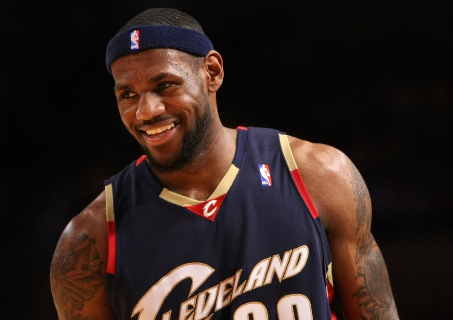
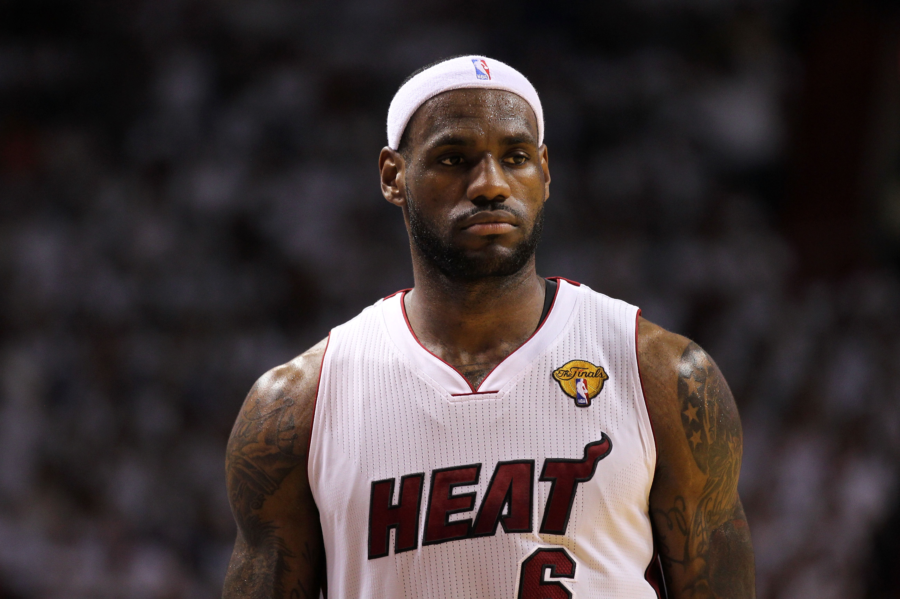
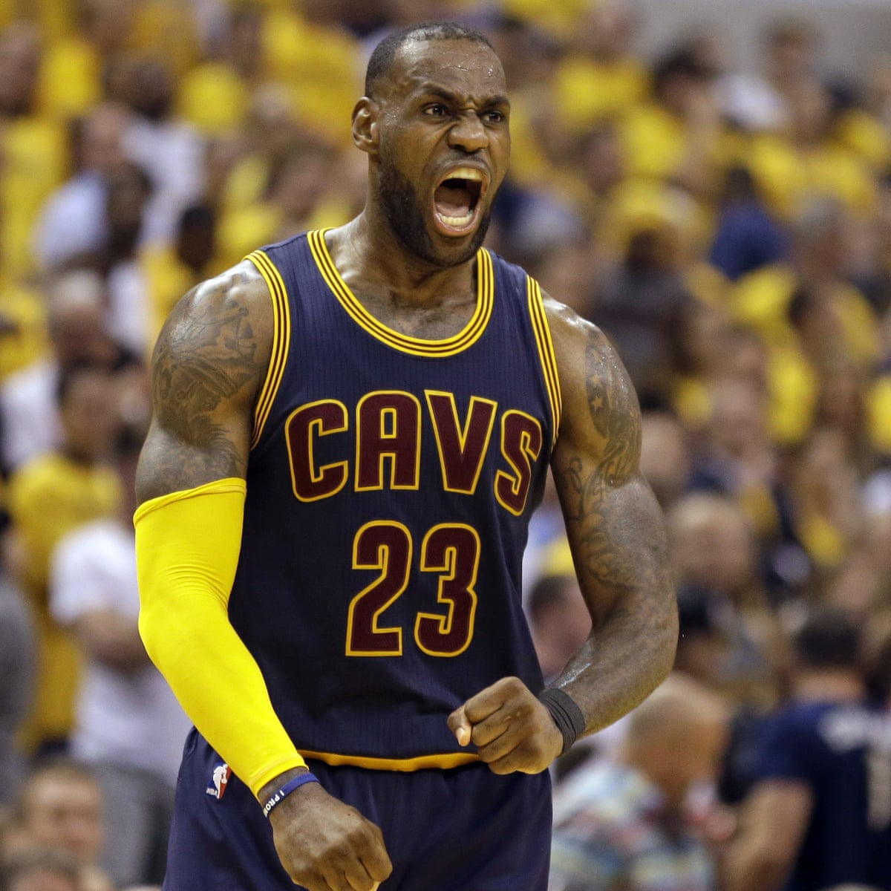
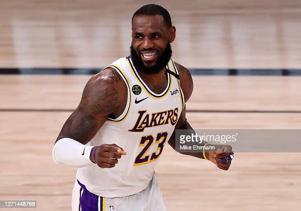

LeBron James is an American basketball player with the Los Angeles Lakers. James first garnered national attention as the top high school basketball player in the country. With his unique combination of size, athleticism and court vision, he became a four-time NBA MVP. After leading the Miami Heat to titles in 2012 and 2013, James returned to Cleveland and helped the franchise claim its first championship in 2016.
James was born on December 30, 1984, in Akron, Ohio. At an early age, James showed a natural talent for basketball. He was recruited by St. Vincent-St. Mary High School to join their basketball team in 1999. Overall, James scored 2,657 points, 892 rebounds and 523 assists during his four years there. As a freshman, James averaged 18 points per game. He helped the team to a Division III state title by scoring 25 points in the championship game. Word of his advanced basketball skills spread, and James received several honors for his performance. As a high school sophomore, James was chosen for the USA Today All-USA First Team. He was the first sophomore ever selected for this award. His team also won the Division III state title for the second year in a row.
In January 2018, at age 33, James surpassed Bryant as the youngest player to accumulate 30,000 career points and became the seventh player in NBA history to achieve that milestone. The feat put him just more than 8,000 points shy of Abdul-Jabbar's all-time record of 38,387 points. In 2019, James surpassed Jordan's career tally of 32,292 points to move into fourth place on the all-time list. In January 2020, he eclipsed Bryant's total of 33,643 points to slide into third place, one night before his predecessor's shocking death in a helicopter accident.
After 16 NBA seasons, James' stats included regular season per-game averages of:
James was selected by the Cleveland Cavaliers in the 2003 NBA Draft. He was eventually named the Rookie of the Year, finishing with averages of 20.9 points, 5.9 assists, and 5.5 rebounds per game. At 19, LeBron became the youngest member of the basketball squad in 2004 Athens Olympics but he spent most of the time on the bench.
He made NBA history again in 2005, when he became the youngest player to score more than 50 points in one game. He was selected for the NBA All-Star game for the first time. With averages of 27.2 points, 7.4 rebounds, 7.2 assists, and 2.2 steals per game, he became the youngest player in NBA history to be named to an All-NBA Team, in the 2004–05 seasons. In 2006, he helped his team beat the Wizards in the first round of playoff. Against the Pistons in the semifinals, even his average of 26.6 could not secure his team’s victory.
After the 2006 Playoffs, James and the Cavaliers negotiated a three-year, $60 million contract extension with a player option with the option of seeking a new contract as an unrestricted free agent. The Cavaliers proved to be stronger competitors in 2007, reaching the NBA finals, beating Detroit to win the Eastern Conference but lost in the finals against the San Antonio Spurs. During the 2007-08 season, the Cavaliers improved their standing in the Eastern Conference. The team made it to the semifinals, where they were defeated by the Boston Celtics in seven games.
Shortly after becoming a free agent in 2010, he announced that he would be joining the Miami Heat for the upcoming season. He finished second in the league, scoring 26.7 points per game.
James competed at his third Olympic Games in 2012, in London, along with teammates Kevin Durant, Carmelo Anthony and Kobe Bryant, and the team brought home the second consecutive Olympic gold.
At the end of the 2012-13 season, against the San Antonio Spurs, Miami transformed a seemingly impossible championship win into reality, winning their second consecutive national title with a 3-4 victory.
In 2014, LeBron James opted out of his contract with Miami Heat and signed with Cleveland Cavaliers. In 2014–15 season, Cleveland Cavaliers advanced to the NBA finals and in the process James became first player since the 1960s to play in five consecutive NBA finals.
His 2015–16 season was marred by controversies which also included the midseason firing of Cavaliers' coach David Blatt. But in spite of all this LeBron James performed admirably and the third player to record a triple-double in an NBA Finals Game.
LeBron's stint with Cleveland Cavaliers ended in 2018 and thereafter, he signed a contracts with Los Angeles Lakers.
In February 2019, James became the fifth NBA player to reach 32,000 points. On March 6, 2019, in a game against Denver Nuggets, he surpassed Michael Jordan to become the fourth highest scorer on the NBA list.
